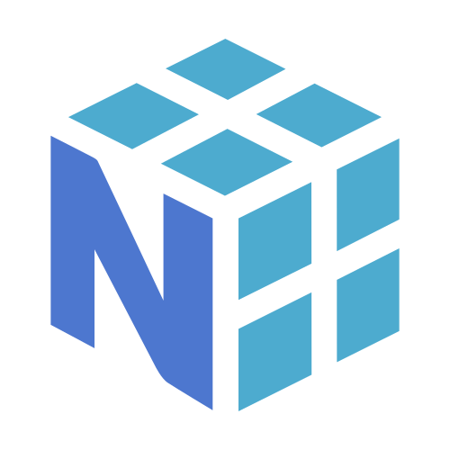
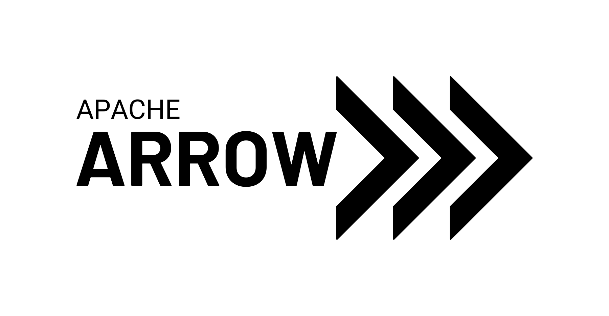
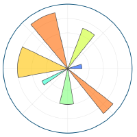

Ecosystem¶
Welcome to the Apache Hamilton Ecosystem page! This page showcases the integrations, plugins, and external resources available for Apache Hamilton users.
🚀 Interactive Tutorials¶
Learn Apache Hamilton concepts through interactive, browser-based tutorials.
Built-in Integrations¶
Apache Hamilton provides first-class support for many popular data science and engineering tools through built-in plugins and adapters. These integrations are maintained by the Apache Hamilton community and included in the core project.
Data Frameworks¶
Apache Hamilton integrates seamlessly with popular data manipulation libraries:
Integration |
Description |
Documentation |
|---|---|---|
|
DataFrame operations and transformations |
|
|
High-performance DataFrame library |
|
|
Distributed data processing with Spark |
|
|
Parallel computing and distributed arrays |
|
|
Distributed computing framework |
|
Ibis |
Portable DataFrame API across backends |
|
Vaex |
Out-of-core DataFrame library |
|
Narwhals |
DataFrame-agnostic interface |
|
 NumPy |
Numerical computing arrays |
|
 PyArrow |
Columnar in-memory data |
Machine Learning & Data Science¶
Build and deploy ML workflows with Apache Hamilton:
Integration |
Description |
Documentation |
|---|---|---|
MLflow |
Experiment tracking and model registry |
|
scikit-learn |
Machine learning algorithms |
|
XGBoost |
Gradient boosting framework |
|
LightGBM |
Gradient boosting framework |
|
|
Transformers and NLP models |
|
Pandera |
DataFrame validation |
|
Pydantic |
Data validation and settings |
Orchestration & Workflow Systems¶
Use Apache Hamilton within your existing orchestration infrastructure:
Integration |
Description |
Documentation |
|---|---|---|
Airflow |
Workflow orchestration platform |
|
Dagster |
Data orchestrator |
|
Prefect |
Workflow orchestration |
|
Kedro |
Data science pipelines |
|
Metaflow |
ML infrastructure |
|
dbt |
Data transformation tool |
Data Engineering & ETL¶
Tools for building robust data pipelines:
Integration |
Description |
Documentation |
|---|---|---|
dlt |
Data loading and transformation |
|
Feast |
Feature store |
|
|
Web service framework |
|
Streamlit |
Interactive web applications |
Observability & Monitoring¶
Track and monitor your Apache Hamilton dataflows:
Integration |
Description |
Documentation |
|---|---|---|
Datadog |
Monitoring and analytics |
|
OpenTelemetry |
Observability framework |
|
OpenLineage |
Data lineage tracking |
|
Hamilton UI |
Built-in execution tracking |
|
Experiment Manager |
Lightweight experiment tracking |
Visualization¶
Create visualizations from your dataflows:
Integration |
Description |
Documentation |
|---|---|---|
Plotly |
Interactive plotting |
|
 Matplotlib |
Static plotting |
|
Rich |
Terminal formatting and progress |
Developer Tools¶
Improve your development workflow:
Integration |
Description |
Documentation |
|---|---|---|
|
Notebook magic commands |
|
VS Code |
Language server and extension |
|
Claude Code |
AI assistant plugin for Hamilton development |
|
MCP Server |
LLM tool server for interactive DAG development |
|
tqdm |
Progress bars |
Cloud Providers & Infrastructure¶
Deploy Apache Hamilton to the cloud:
Integration |
Description |
Documentation |
|---|---|---|
|
Amazon Web Services |
|
Google Cloud |
Google Cloud Platform |
|
Modal |
Serverless cloud functions |
Storage & Caching¶
Persist and cache your data:
Integration |
Description |
Documentation |
|---|---|---|
DiskCache |
Disk-based caching |
|
File-based caching |
Local file caching |
Other Utilities¶
Integration |
Description |
Documentation |
|---|---|---|
|
Notifications and integrations |
|
GeoPandas |
Geospatial data analysis |
Type extension for GeoDataFrame support |
YAML |
Configuration management |
External Resources¶
The following resources and services are provided by third parties and the broader Apache Hamilton community.
⚠️ Important Notice:
These resources and services are not maintained, nor endorsed by the Apache Hamilton Community and Apache Hamilton project (maintained by the Committers and the Apache Hamilton PMC). Use them at your sole discretion. The community does not verify the licenses nor validity of these tools, so it’s your responsibility to verify them.
Community Resources¶
📚 Dataflow Hub¶
A repository of reusable Apache Hamilton dataflows contributed by the community. Browse and download pre-built dataflows for common use cases.
Note: It’s WIP to move the domain to be under Apache. DAGWorks Inc., which donated Hamilton, is not an operating entity anymore.
📝 Blog & Tutorials¶
Articles covering Apache Hamilton use cases, design patterns, reference architectures, and best practices.
Note: It’s WIP to move the contents to be under Apache. DAGWorks Inc., which donated Hamilton, is not an operating entity anymore.
🎥 Video Content¶
Video tutorials, talks, and meetup recordings about Apache Hamilton.
Note: It’s WIP to move the contents to be under Apache. DAGWorks Inc., which donated Hamilton, is not an operating entity anymore.
Contributing to the Ecosystem¶
Adding a New Integration¶
If you’ve created a plugin or integration for Apache Hamilton, we’d love to include it in our ecosystem!
For Built-in Integrations (maintained by the Apache Hamilton project):
Create a plugin in the
hamilton/plugins/directoryAdd documentation and examples
Submit a pull request to the Apache Hamilton repository
Follow the contribution guidelines
For External Resources (maintained by third parties):
Submit a pull request to add your resource to this page under “External Resources”
Include a clear description and link
Ensure your resource is relevant to Apache Hamilton users
Your resource must be properly licensed and actively maintained
Support & Questions¶
💬 Slack Community - Real-time chat and community support
🐛 GitHub Issues - Bug reports and feature requests
📖 Documentation - Comprehensive guides and API reference
📧 Mailing List - Join the Apache Hamilton users mailing list for discussions and announcements
How to Subscribe: Send an empty email to users-subscribe@hamilton.apache.org. Use a subject line like “subscribe” to avoid spam filters. Await a confirmation message and follow the instructions to complete the process.
How to Unsubscribe: Send an empty message to users-unsubscribe@hamilton.apache.org from the same email address used to subscribe.
How to Post: Once subscribed, post messages to users@hamilton.apache.org
Archives: View past discussions
Stay Updated¶
⭐ Star us on GitHub
🐦 Follow @hamilton_os on Twitter/X
📧 Join the mailing lists for announcements